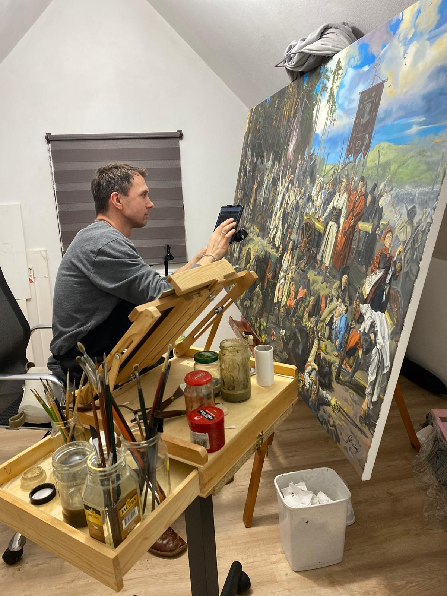

Detal, który buduje wiarygodność
Każdy fragment obrazu ma znaczenie — od światła i gestu, po strukturę tkanin, krajobrazu czy architektury.
O artyście
Grzegorz Kozdrój tworzy obrazy olejne na płótnie, w których liczy się nie tylko temat, ale również siła obecności dzieła w przestrzeni. To malarstwo, które przyciąga spojrzenie i zostaje z odbiorcą na dłużej.

Biografia
Nazywam się Grzegorz Kozdrój i zajmuję się malarstwem techniką olejną na płótnie. Maluję od ponad 20 lat — początkowo hobbystycznie, z przerwami, a od kilku ostatnich lat profesjonalnie.
Tworzę przede wszystkim portrety, pejzaże, kopie dzieł sławnych malarzy, obrazy sakralne, a także własne kompozycje autorskie. W swojej twórczości staram się ukazywać piękno obecne w świecie, przyrodzie, zwierzętach i człowieku.
Moje obrazy wyróżniają się żywą kolorystyką, przestrzennością i dbałością o detal. Jestem samoukiem — malarzem, który potraktował talent i potrzebę tworzenia jako coś, co warto rozwijać z pełnym zaangażowaniem.
Każda praca powstaje intuicyjnie, ale jednocześnie wymaga cierpliwości, warsztatu i świadomego budowania kompozycji.
Podejście
Każdy fragment obrazu ma znaczenie — od światła i gestu, po strukturę tkanin, krajobrazu czy architektury.
Kolor nie pełni wyłącznie funkcji dekoracyjnej. Prowadzi emocję i wzmacnia charakter całej kompozycji.
Dzieło ma działać nie tylko w zbliżeniu. Ma wybrzmiewać także z dystansu, nadając wnętrzu rytm i punkt ciężkości.
Wielowarstwowa praca nad obrazem wymaga skupienia, cierpliwości i konsekwencji, szczególnie przy większych formatach.
Tematyka
W twórczości Grzegorza Kozdroja pojawiają się pejzaże, malarstwo sakralne, sceny historyczne, portrety oraz autorskie kompozycje. Mimo różnorodności tematów wszystkie prace łączy zamiłowanie do światła, głębi i obecności detalu.
Przestrzeń, natura, światło i oddech.
Symbolika, duchowość i wyciszenie.
Ruch, narracja i wieloplanowa kompozycja.
Obecność, charakter i skupienie na człowieku.
“
Każdy obraz to osobna opowieść — budowana kolorem, fakturą, światłem i emocją.
Kontakt
Jeśli chcesz zapytać o dostępność prac, obraz na zamówienie lub możliwość współpracy, przejdź do galerii albo skontaktuj się bezpośrednio.